برنامج مايكروسوفت إكسلMicrosoft Excel 2010
عملي · م01أقسام المحاضرة (11)
- تشغيل Excel ونافذته وورقة العملStarting Excel and the Worksheet
- إنشاء المصنف وحفظه وفتحهCreating, Saving and Opening Workbooks
- إدخال البيانات وتحديد الخلاياEntering Data and Selecting Cells
- الصفوف والأعمدةRows and Columns
- النسخ والتعبئة والبحثCopy, Fill and Find
- أوراق العملManaging Worksheets
- الصيغ والدوالFormulas and Functions
- التنسيق والصور والأشكالFormatting, Pictures and Shapes
- تخطيط الصفحة والحمايةPage Layout and Protection
- مكتبة الدوال والربط الفائقFunction Library and Hyperlinks
- المخططات وخطوط المؤشرCharts and Sparklines
تشغيل Excel ونافذته وورقة العملStarting Excel and the Worksheet
Microsoft Excel 2010
يعتبر برنامج مايكروسوفت اكسل (Microsoft Excel) من البرامج التي تستخدم لانشاء الجداول الالكترونية والتي تسمح يتنظيم البيانات الموجودة في هذه الجداول وترتنيها والقيام بالعمليات الحسابية والتحليلات الاحصانية وانشاء المخططات البيانية عليها. ولتشغيل هذا البرنامج نتبع الأتي:
- 1. اختر كل البرامج (All Programs) من زر ابدأ (Start) الموجود في يسار اسئل الشاشة.
- 2. من (Microsoft Office) نختار (Microsoft Excel 2010)
كما يمكن الدخول لهذا البرنامج من ايقونة الاختصار اكسل الموجودة على سطح المكتب أو كتابة عبارة (excel) في حقل البحث الموجود في قائمة أبدأ.
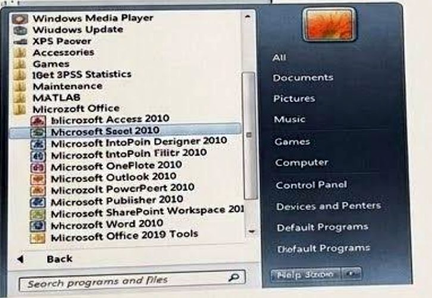
سيتكون مصنف واحد (Book 1) وهو اسم افتراضي ويسمي ملف الاكسل (WorkBook) وياخد الامتماد (xlsx) الذي يحتوي على ثلاث اوراق عمل (WorkSheets) حينة تتكون ورقة العمل من الصفوف (Rows) وهي مجموعة من الخلايا الاقفية ويشار لها بالإرقام اذ ببلغ عبد الصفوف (1048576) صف, ومن الاعمدة (Columns) وهي مجموعة من الخلايا العمودية ويشار لها (تبدأ من العمود A وتنتهي بالعمود المسمي (XFD ويبلغ عدد الاعمدة (16384) عمود, ومن الخلايا (Cells) وهي عبارة عن تقاطع الصفوف مع الاعمدة وللخلية عدران خاص بها يسمي مرجع الخلية (Reference Number) يتكون من حرف ورقم مثل (A1).
برنامج MICROSOFT EXCEL 2010
برنامج EXCEL هو برنامج الجداول الألكترونية الذي يتيح تخزين كم هائل من البيانات في جداول والقيام بالعمليات الحسابية والتحليلات الأحصائية عليها وأنشاء الرسوم البيانية عليها .
لتشغيل هذا البرنامج نتبع الخطوات الأتية:-
- 1. أختر جميع البرامج All programs من زر أبدأ الموجود في يسار أسفل الشاشة .
- 2. أنقر فوق Microsoft office ومن القائمة الفرعية أنقر فوق [Microsoft office] .
- 3. ينشأ مصنف فارغ تلقائيا يحتوي على ثلاث أوراق عمل منفصلة كما موضح في الشكل.
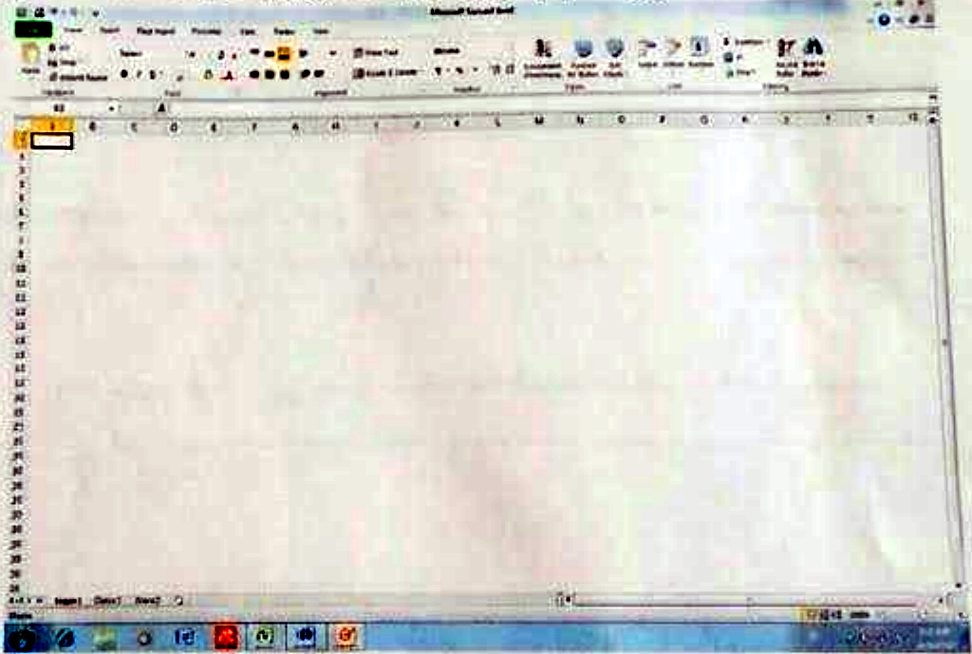
العناصر الأساسية التي تتكون منها نافذة EXCEL 2010 — Basic Elements Of Excel 2010
شريط العنوان: الذي يتضمن عنوان المصنف المفتوح حين نفتح مصنفا جديدا فأن Excel يعطيه الاسم Book1 وعند خزن المصنف بأسم جديد فأن هذا الأسم الجديد يظهر على شريط العنوان ويحتوي هذا الشريط على أيقونات الأغلاق والتصغير والتكبير للنافذة .
ويحتوي على شريط أدوات الأقلاع السريع Quick Access Toolbar الذي يضم الأوامر التي تستخدم بكثرة أثناء العمل .
2. الشريط Ribbon الظاهر في أعلى المصنف الذي هو مشايه الشريط الموجود في الأصدار 2017 من البرنامج والأختلاث الموجود فيه هو قائمة ملف File الموجودة في جهة اليسار أضاقة الى مجموعة من الأوامر الاضاقية التي أضيفت في هذا الأصدار، يحتوي هذا الشريط على ثلاثة أجزاء كما هو الحال في الأصدار 2007 كما في الشكل.
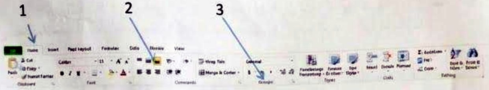
أجزاء الشريط :
1- علامة التبويب Tab تكون في أعلى الشريط وعند النقر عليها يمكن الوصول الى الأوامر الخاصة بها .
2- الأوامر Commands التي تكون مرتبة في مجموعة منفصلة .
3 - المجموعات Groups التي هي عبارة من مجموعة من الأوامر المتعلقة ببعضها تستخدم تتنفيذ مهام محددة ويوجد سهم صغير في الزاوية اليمني السفلي المجموعة الذي يهيء ليا خبارات أضافية المجموعة.
3- شريط الصيغة الرياضية Formula bar الذي بظهر محتويات الخلية النشطة أن كانت صيغة رياضية او أية معطيات أخرى كما في الشكل .
4- شريطي التصفح Scroll bars يستخدمان عندما تكون أبعاد المصلف أكير من أبعاد الشاشة .
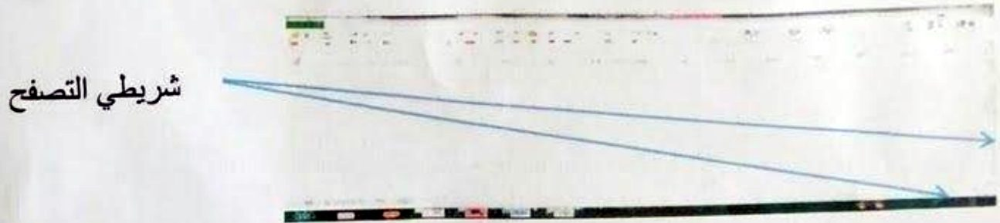
5- شريط الحالة Status bar الذي يظهر أسئل الشاشة وببين طرق عرض المصلف أضافة الى معلومات مختصرة عن حالة المصلف الحالية .
6- قائمة الملف File menu وهي القائمة التي يتميز بها الأصار Excel 2010 عن الأصدار السابق Excel 2007 التي تحتوي عددا من الأوامر الموضحة بواسطة أيكونات مثل الحفظ Save والحفظ بأسم Save as والفتح Open والعلق Close التي يتم تنفيذها مباشرة أو بعد ظهور مربع حوار وتحتوي أيضا على مجموعة ثانية من الأوامر التي تظهر تفاصيلها كما في الشكل .
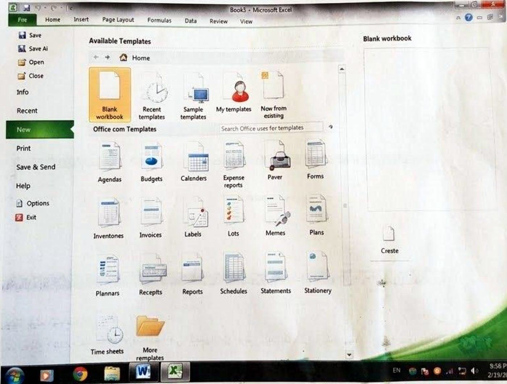
حيث أن هذه القائمة تحتوي على مجموعة من الأوامر التي بجانبها رمز دلالة فيتم تنفيذها مباشرة أو عن طريق مربع حوار كما في الأمر حفظ Save والأمر حفظ بأسم Save as والأمر فتح Open والأمر أغلاق Close وهناك أيضا مجموعة من الأوامر التي ليس بجانبها رمز ولكنها تحتوي على مجموعة من الأوامر الخاصة بها كالأمر معلومات Info وجديد Recent وغيرها .
ورقة العمل WORK SHEET
المصنف Book عبارة عن ملف في برنامج Excel يحتوي على أوراق عمل Worksheets حيث تتكون ورقة العمل من مجموعة من :
1- الصفوف Rows هي مجموعة الخلايا التي ترتتب أفقيا في الجدول ويشار أليها بالأرقام .
2- الأعمدة Columns هي مجموعة الخلايا التي تترتب عموديا في الجدول ويشار اليها بالحروف .
3- الخلية Cell هي عبارة عن تقاطع الصف والعمود ولها عنوان بدعي مرجع الخلية Reference number يتكون من حرف ورقم فالحرف يحدد العمود والرقم يحدد الصف .
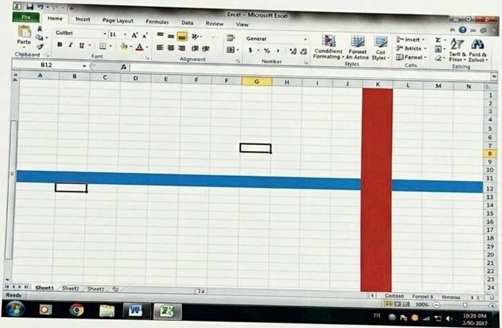
مكونات الجدول الألكتروني :
المرجع D7 يحدد الخلية الواقعة في العمود D وفي الصف 7 والمرجع B12 يحدد الخلية الواقعة في العمود B والصف 12 .
مدى الخلايا Cell range
المدى هو النطاق الذي يشير الى المسافة بين نقطتين وهو على ثلاثة أنواع :
1. المدى الأفقي Horizontal range
الذي يشتمل على خلايا متتالية أفقيا ضمن صف واحد كما في الشكل .
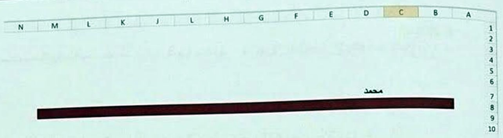
حيث أن المدي هنا هو B8:M8
2. المدى العمودي Vertical range
الذي يشتمل على خلايا متتالية عموديا ضمن عمود واحد كما في الشكل.
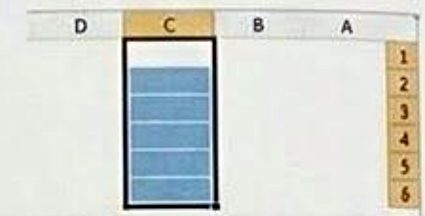
حيث أن المدى هو C1:C6
3. المدى الأفقي والعمودي Horizontal and Vertical range
الذي يشتمل على خلايا متتالية عموديا وأفقيا في أن واحد كما في الشكل.
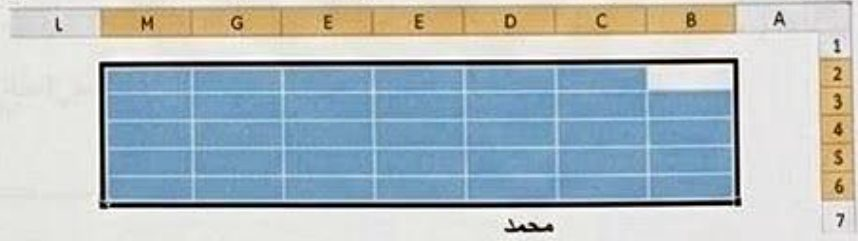
حيث أن المدى هو B2:H6 .
إنشاء المصنف وحفظه وفتحهCreating, Saving and Opening Workbooks
إنشاء مصنف جديد CREATING NEW WORKBOOK
عندما نشغل برنامج Excel فأنه يفتح مصنفا جديد ا مباشرة . أما عندما نفتح مصنفا أخر فعلينا مايأتي :
- 1. ننفر قائمة File ثم زر جديد New فيظهر مربع حوار مصنف جديد كما في الشكل.
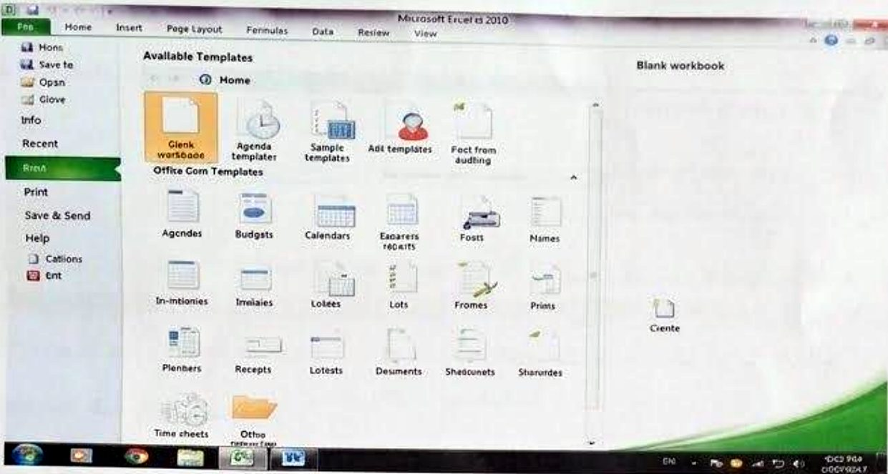
2. من فئة القوالب المتوفرة Available templates نختار قالب مصنف فارغ Blank workbook ومن الجهة اليمنى يتم اختيار مصنف فارغ Blank workbook .
حفظ المصنف SAVING A WORKBOOK
بعد الأنتهاء من جميع الأعمال على ورقة العمل تتم عملية الحفظ كما يأتي:
ننقر قائمة File ثم ننقر زر حفظ Save فتظهر نافذة حوار حفظ باسم Save as كما في الشكل.
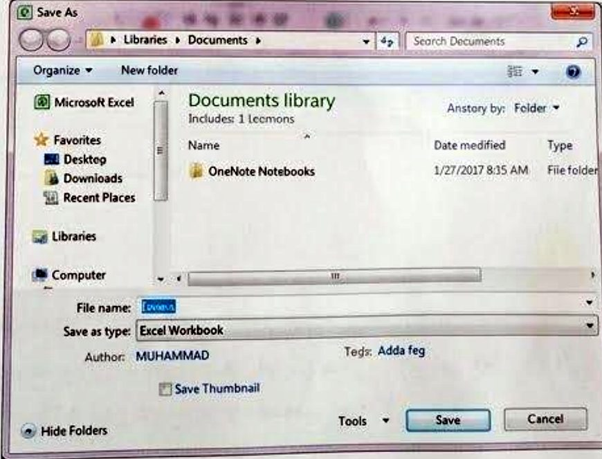
نلاحظ في هذه النافذة :
- 1. الشريط الأول في أعلى النافذة يحدد الصار الخاص بالملفات المفتوحة .
- 2. الشريط المجاور له في الجهة اليمني يستخدم للبحث عن ملف أو برنامج محدد بكتابة إسمه في هذا الشريط .
- 3. الجانب الأيسريمثل لوح المستكشف Explorer pane الذي يستخدم لتغيير مكان الحفظ داخل الحاسبة .
- 4. الجانب الأيمن يبين تفاصيل الملفات والبرامج الموجودة في الموقع الذي تم تحديده من الجانب الأيسر.
- 5. الشريط الخاص بأسم الملف File name الذي يظهر به الأسم الأفتراضي للملف والذي يمكن تغييره .
- 6. الشريط الأخير Save as type الذي بوساطتة يمكن تحديد نوع الملف المخزن .
- 7. بعد الأنتهاء من جميع الأجراءات السابقة يمكن الضغط على الأيعاز حفظ Save .
ملاحظة: عندما تتم عملية حفظ الملف لأول مرة بأستخدام الأيعاز حفظ Save تنفتح نافذة حفظ بأسم Save as الظاهرة في الشكل أعلاه وكذلك عندما تتم عملية الخزن بأسم جديد أما عندما تتم عملية الخزن بعد إجراء التعديلات على الملف ودون تغيير الأسم فلاتفتح هذه النافذة وأنما تتم عملية الخزن على الملف ذاته مباشرة .
ملاحظة : مصنفات Excel 2010 تأخذ الأمتداد xlsx .
حفظ مصنف لأستخدامه بوساطة أصدارات سابقة من EXCEL — SAVING A WORKSHEET TO USE IT IN PREVIOUS VERSIONS OF EXCEL
يمكن فتح المصنفات التي تم أنشانها بأستخدام Excel 2010 في أصدارات سابقة من Excel مع الأخذ بنظر الأعتبار ففدان بعض المواصفات الخاصة ب Excel 2010 ولحفظ المصنف لأستخدامه في الأصدارات السابقة ل Excel نتبع مايأتي :
ننقر قائمة file ثم ننقر Save as وفي القائمة التي ستظهر ننقر الشريط الأخير Save as type ومن القائمة الترعية تختار Excel 97-2003 Workbook كما في الشكل.
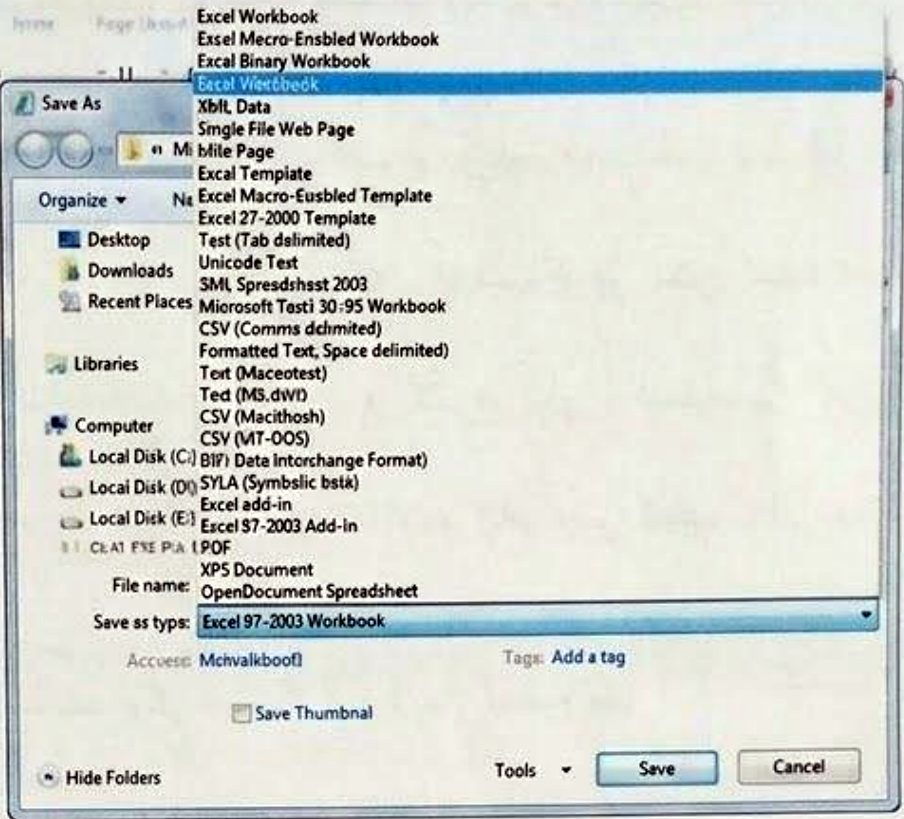
في شريط اسم الملف File name ندخل اسم الملف ثم ننقر Save .
لأغلاق المصنف الحالي دون الخروج من البرنامج تنقر من أعلى القائمة فيتم أعلاق النافذة الحالية أو ننقر أعلاق من شريط العنوان في الزاوية العليا اليمني من النافذة وعندها تظهر النافذة الأتية كما في الشكل التصنف الذوباخل في المساكل.
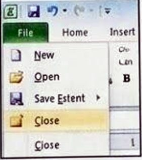
في هذه النافذة عندما :
- 1. نضغط Don't save فهذا يعني أغلاق المصنف دون خزن التعديلات .
- 2. نضغط Save فهذا يعني أغلاق المصنف مع خزن التعديلات .
- 3. نضغط Cancel فهذا يعني التراجع عن الأغلاق والأستمرار بالعمل في المصنف .
لفتح مصنف مخزون مسبقا تقوم بما يأتي :
من قائمة File تنقر Open فتظهر نافذة فتح كما في الشكل .
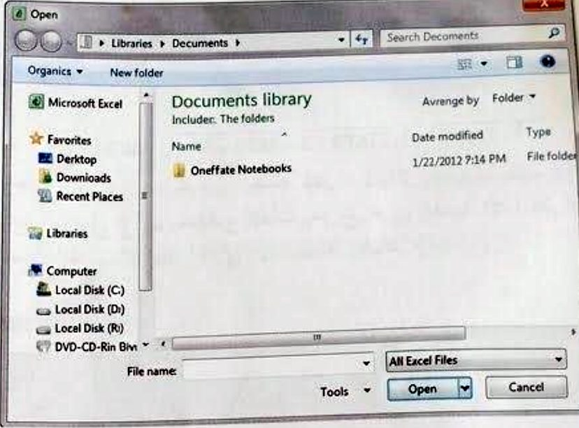
في هذه النافذة تحدد موقع المصنف المطلوب وننقر فوق أسم المصنف الذي نريد فتحه فيظهر في شريط أسم الملف File name ثم تنقر فتح Open فيتم فتح المصنف .
أستخدام EXCEL 2010 التعامل مع مصنفات تم أنشاوها في أصدارات EXCEL السابقة — USING EXCEL 2010 TO OPEN WORKSHEETS CREATED IN PREVIOUS VERSIONS OF EXCEL
عند فتح مصنف أنشيء في أصدارات سابقة مثل Excel 2002 أو Excel 2003 أو Excel 2007 في Excel 2010 فيتم تشغيله في وضع التوافق Compatibility mode ويظهر ذلك في شريط العنوان كما في الشكل .
في هذا الوضع يمكن فتح مصنفات Excel 97-2003 وتحريرها وحفظها ولكن يتعذر الأستفادة من الميزات الجديدة الموجودة في Excel 2010 .
وأذا أردنا تحويل المصنف من وضع التوافق الى Excel 2010 نتبع مايأتي :
ننقر قائمة File ثم ننقر تحويل Convert فتظهر نافذة Microsoft Excel فننقر موافق OK كما في الشكل .
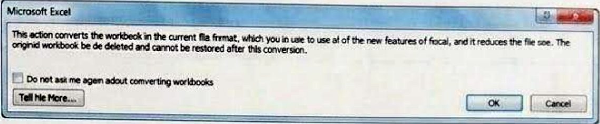
إدخال البيانات وتحديد الخلاياEntering Data and Selecting Cells
ادخال البيانات في مصنف 2010 ENTERING DATA IN EXCEL 2010 WORKSHEET
لأدخال البيانات في ورقة العمل في مصنف نضع المؤشر في الخلية المراد أدخال البيانات أليها وذلك بالنقر في تلك الخلية أو باستخدام الأسهم الموجودة في لوحة المفاتيح فيظهر مربع حول الخلية دلالة على أن هذه الخلية هي الخلية النشطة فندخل البيانات أو الصيغ الرياضية أليها ثم تضغط مفتاح Enter .
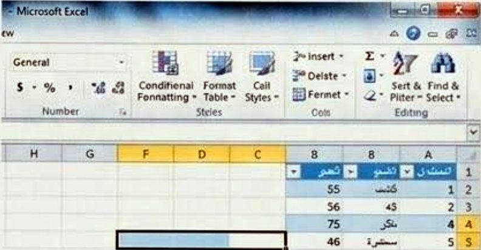
تعديل البيانات على البيانات التي تم ادخالها بطرق عدة :
- 1. نضح المؤشر في الخلية المراد تعديل بياناتها تقظهر القيمة المدخلة فيها على شرية الصيعة الرياضية ويظهر مؤشر عمودي وامض عليها حيث يمكن أدخال القيمة الجديدة وعند الضغط على Enter تتم عملية تطبيق التعديلات على الخلية .
- 2. ننقر نقرا مزودجا في الخلية المراد تعديل بياناتها فيظهر مؤشر عمودي وامض حيث نستطيع أجراء التعديل الذي نريد .
- 3. ننقر الخلية المراد تعديل بياناتها ثم تقوم بأدخال البيانات الجديدة مباشرة .
تحديد الخلايا SELECTING CELLS
عندما نريد تنفيذ أي أمر على خلية ما أو مجموعة خلايا فيجب تحديد هذه الخلايا أولا
1 . فلتحديد خلية منفردة تنقر فوق الخلية أو ننتقل أليها عن طريق مفاتيح الأسهم كما في الشكل.
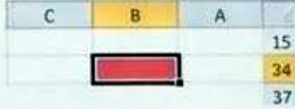
2. لتحديد نطاق من الخلايا نضع مؤسر الفارة في الخلية التي نريد بده التحديد منها ثم نضغط الزر الأيسر وتتحرك في الأتجاه الذي نريد مع استمرار الضغط حتى يتم تحديد المنطقة المطلوبة كما في الشكل .
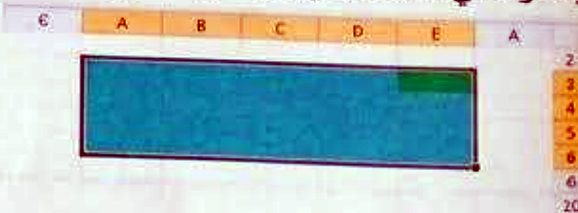
3. لتحديد خلايا ورقة العمل كافة ننقر زر تحديد الكل Select all كما في الشكل.
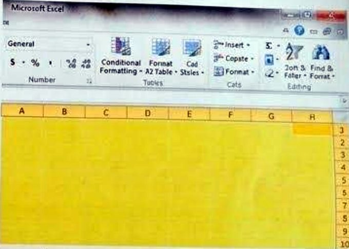
4. لتحديد صف محدد نضع المؤشر على رقم الصف فيتحول المؤشر الى سهم أسود صغير فننقر على الرقم كما في الشكل.
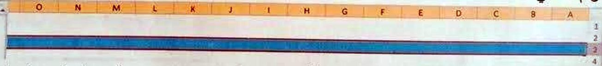
5.لتحديد مجموعة متناوف متباعدة تحدد الصف الأول ثم نضغط مفتاح Ctrl مع أستمرار الضغط ننقر رقم الصف الثاني والصف الثالث وهكذا كما في الشكل .
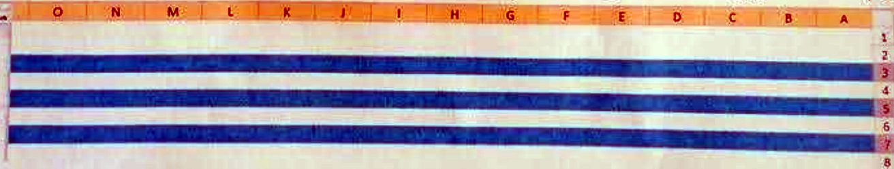
6.لتحديد عمود محدد نضع المؤشر على حرف العمود فيتحول المؤشر الى سهم أسود صغير فننقر على الحرف كما في الشكل.
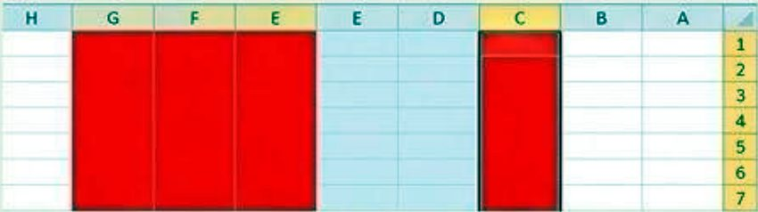
7.لتحديد مجموعة أعمدة متبابعة تحدد العمود الأول ثم نضغط مفتاح Ctrl مع أستمرار الضغط ننقر حرف العمود الثاني والعمود الثالث وهكنا كما ثي الشكل.
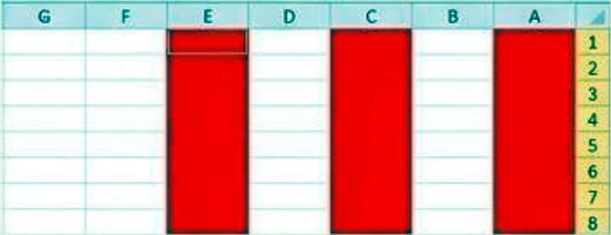
لألفاء تحديد الخلايا تنقر أية خلية ضمن ورقة العمل .
الصفوف والأعمدةRows and Columns
ادراج صف INSERTING A ROW
لادراج صف أو أكثر عند نقطة ما في ورقة العمل نضع المؤشر في بداية الصف الذي تريد أضافة صف جديد قبله ومن تبييوب الصفحة الرئيسية Home ومن مجموعة خلايا Cells تنفر السهم الموجود الى جانب أدراج ثم ننقر فوق أدراج صفوف جدول Insert Sheet Rows كما في الشكل.
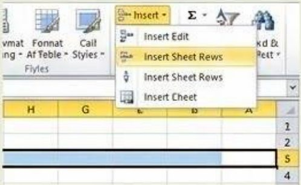
فيتم أدراج جدف جديد الى أعلى الصف الذي تم تحديده .
ادراج عمود INSERTING A COLUMN
ولادراج عمود أو أكثر عند نقطة ما في ورقة العمل نضع المؤشر في بداية العمود الذي نريد أضافة عمود جديد قبله ومن تبويب الصفحة الرئيسية Home ومن مجموعة خلايا Cells تنفر السهم الموجود الى جانب أدراج ثم تنفر فوق أدراج أعمدة جدول Insert Sheet Columns كما في الشكل.
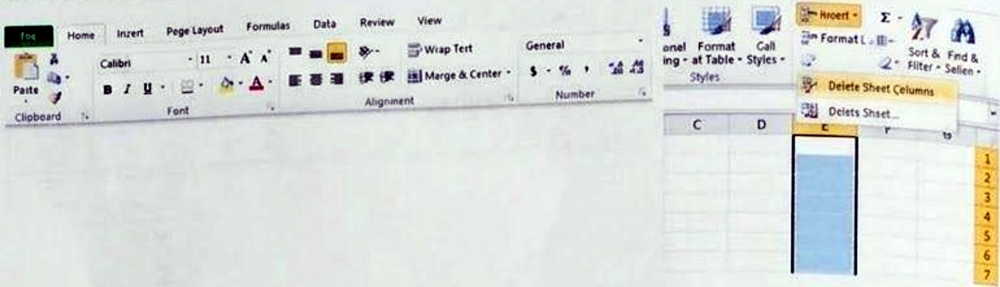
حذف صفوف أو أعمدة DELETING ROWS OR COLUMNS
يمكن حذف صفوف أو أعمدة بأكملها وأزالتها من ورقة العمل كما يأتي :
ننقر عنوان العمود أو الصف الذي نريد حذفه ومن تبويب الصفحة الرئيسية Home ومن مجموعة خلايا Cells ننقر السهم أسفل Delete كما في الشكل .
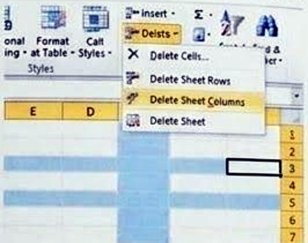
لحذف صف ننقر حذف صفوف جدول Delete Sheet Rows فتتحرك البيانات المسجلة أسفل الصف المحذوف إلى الأعلى ولحذف عمود ننقر حذف أعمدة جدول Delete Sheet Columns فتتحرك البيانات المسجلة بعد العمود المحدد الى موقع العمود المحذوف .
تعديل أرتفاع الصف ADJUSTING ROW HEIGHT
عندما نريد أن نعدل أرتفاع صف معين ليتناسب مع البيانات المدخلة فيه نضع مؤشر الفأرة عند حد الصف الذي نريد تعديل أرتفاعه فيتغير شكل المؤشر إلى خط أفقي يتوسطه سهم برأسين . عند تحريك المؤشر إلى الأعلى يتم تقليل أ رتفاع الصف وعند تحريكه الى الأسفل يتم زيادة أرتفاع الصف ويظهر مربع يبين مقدار الأرتفاع التاتج عن حركة الفأرة كما في الشكل.
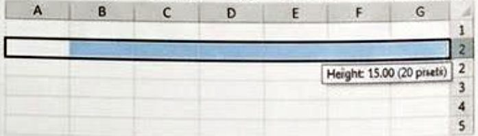
وللحصول على ارتفاع محدد الصف تنفر الخلية المراد تعديل أرتفاعها وفي الصفحة الرئيسية Home نذهب الي مجموعة الخلايا Cells وننقر السهم أسفل تنسيق Format ثم ننقر أرتفاع الصف Row Height كما في الشكل.
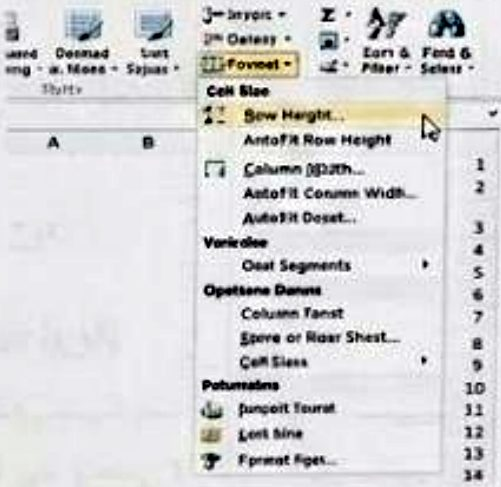
فتظهر نافذة تحديد أرتفاع الصف كما في الشكل.
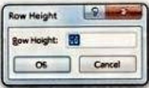
يمكن تحديد ارتفاع الصف بشكل تلقائي استدادا الى حجم البيانات بالذهاب الى تبويب الصفحة الرئيسة Home ومنها الي Cells وفيها ننقر السهم في تنسيق Format ثم أحتواء تلقائي لارتفاع الصف Auto Fit Row Height .
تعديل عرض عمود ADJUSTING COLUMN WIDTH
عندما نريد أن تعدل عرض عمود معين لينتاسب مع البيانات المدخلة فيه نضع مؤشر الفارة عند حد العمود الدي تريد تعديل عرضه فيتقير شكل المؤشر الى خط عمودي يتوسطه سهم براسين.
عند تحريك المؤشر الى اليسار يتم تقليل عرض العمود وعند تحريكة الى اليمين تتم زيادة عرض العمود ويظهر مربع يبين بعدار العرض الناتج عن حركة الفارة كما في الشكل .
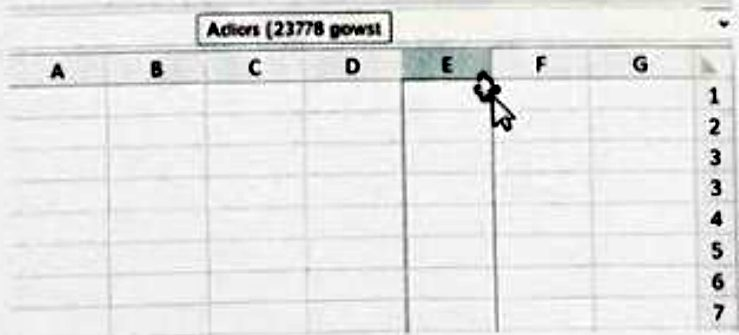
يمكن تحميد عرض العمود بشكل تلقائي أستنادا إلى حجم البيانات بالذهاب الى تيويب الصفحة الرئيسية Home ومنها الى Cells وفيها ننقر السهم في تنسيق Format ثم أحتواء تلقائي تعرض العمود Auto Fit Column Width كما في الشكل .
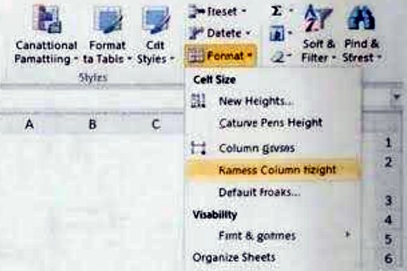
تجميد عناوين الصفوف FREEZING ROWS TITLES
علما تكون البيانات أوسع من عرض الصفحة الظاهرة على الشاشة يمكن تجميد عناوين الصفوف عندما تتصفح الأعمدة البعيدة كما يأتي :
- 1. ننقل المؤشر الى يمين العمود الذي تريد تثبيت عنوانه.
- 2. من تيويب عرض View نذهب الى مجموعة Window وننقر تجميد الأجزاء Freeze pane ثم ننقر تجميد العمود الأول Freeze First Column فيظير خط رأسي يبين أن الأعمدة الواقعة يسار هذا الخط تم تجميدها وبأستخدام شريط التمرير الأفقي يمكن تحريك الأعمدة الى اليسار بأستثناء المنطقة المجمدة كما في الشكل .
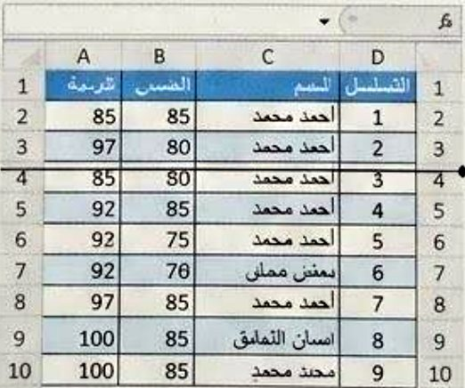
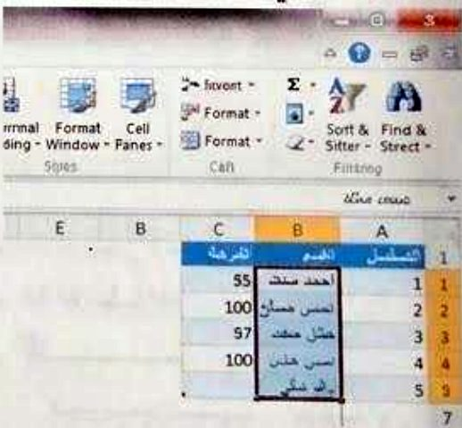
لألغاء هذا التجميد تذهب الى تبويب عرض View ومنه إلى مجموعة Window فتنقر ألغاء تجميد الأجزاء Unfreeze Panes فيختفي الخط الراسي دلالة على ألغاء التجميد .
تجميد عناوين الأعمدة FREEZING COLUMNS TITLES
عنما تكون البيانات أوسع من طول الصفحة الظاهرة على الشاشة يمكن تجميد عناوين الأعمدة عندما تتصفح الصفوف البعيدة كما يأتي :
- 1. ننقل المؤشر الى أسفل خلايا العنوان الذي تريد تثبيته.
- 2. من تبويب عرض View نذهب الى مجموعة Window وننقر تجميد الألواح Freeze pane ثم ننقر تجميد الصف العلوي Freeze Top Row فيظهر خط أفقي يبين أن الصفوف الواقعة أعلى هذا الخط تم تجميدها وبأستخدام شريط التمرير العمودي يمكن تحريك الصفوف الى الأعلى بأستثناء المنطقة المجمدة كما في الشكل .
لألغاء هذا التجميد نذهب الى تبويب عرض View ومنه الى مجموعة Window فننقر الغاء تجميد الألواح Unfreeze Panes فيختفي الخط الأفقي دلالة على الغاء التجميد .
أذا اردنا أن تكون عناوين الصفوف والأعمدة ظاهرة عند أدخال البيانات ننقر الخلية الى يمين واسفل الموقع الذي نريد تثبيت عناوينه ثم نذهب الى تبويب عرض View ومنه الى مجموعة Window وننقر تجميد الألواح Freeze Panes فيظهر خط أفقي وعمودي وعندما نتحرك في النافذة نلاحظ أن ثبات الصفوف والأعمدة يعتمد على أشرطة التمرير .
أخفاء الصفوف والأعمدة HIDING ROWS AND COLUMNS
أذا أردنا أخفاء صف أو عمود يحتوي على بيانات لانريد أن يطلع عليها أحد لأسباب معينة فيمكن أخفاء ذلك الصف بحيث لايظهر في ورقة العمل ويمكن أسترجاعه عند الحاجة اليه كما يأتي :
- 1. نحدد الأعمدة أو الصفوف المطلوب أخفائها .
- 2. بالذهاب الى تبويب الصفحة الرئيسية Home ومنها الى Cells وفيها ننقر السهم في تنسيق Format وفي فئة الرؤيا Visibility نوجه المؤشر الى أخفاء أوأزالة الأخفاء Unhide& Hide .
- 3. من القائمة الفرعية ننقر أخفاء الصفوف أو أخفاء الأعمدة . كما في الشكل.
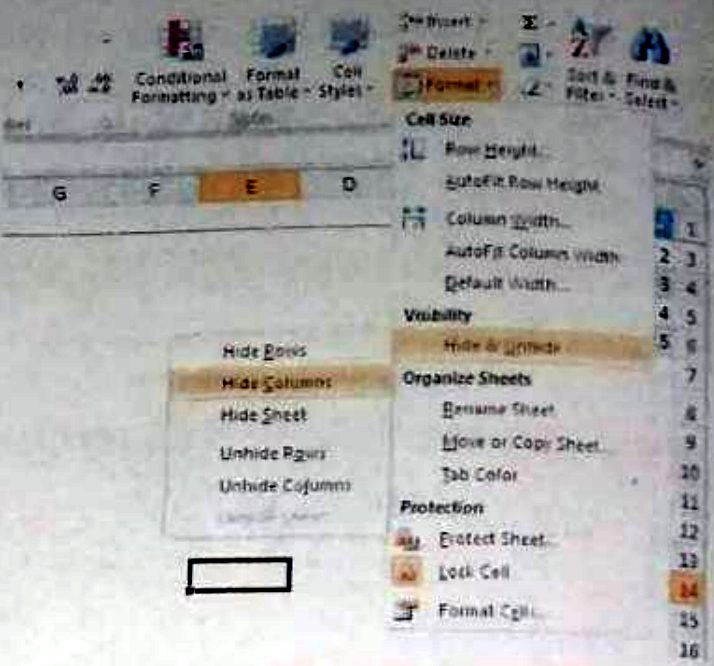
لأظهار الصف أو العمود الذي تم أخفاؤه نقوم بما يأتي :
- 1. نظلل خلية قبل الصف الذي تم أخفاؤه وخلية بعده .
- 2. من تبويب الصفحة الرئيسية Home ومن مجموعة خلايا Cells ننقر السهم أسفل تنسيق Format وفي فئة الرؤيا Visibility نوجه المؤشر الى أخفاء أو أزالة الأخفاء Hide &Unhide ومن القائمة الفرعية ننقر ألغاء أخفاء الصفوف . وكذلك الحال بالنسبة لأزالة أخفاء الأعمدة .
النسخ والتعبئة والبحثCopy, Fill and Find
نسخ محتويات الخلايا COPYING CELLS CONTENTS
تتم عملية النسخ بتحديد الخلايا Cells المطلوب نسخها ثم ننتقل الى تبويب الصفحة الرئيسية Home ومن مجموعة الحافظة Clipboard ننقر نسخ فيظهر أطار منقط حول الخلايا المطلوب نسخها ثم نحرك المؤشر الى الموضع المطلوب النسخ اليه ومن مجموعة الحافظة Clipboard في الصفحة الرئيسية ننقر لصق Paste فيتم نسخ المعلومات الى الموضع المطلوب .
نقل محتويات الخلايا MOVE CELLS CONTENTS
أن عملية نقل محتويات الخلايا مماثلة تماما لعملية النسخ بأستثناء أستبدال أمر النسخ Copy بأمر القطع Cut .
خيارات اللصق PASTE OPTIONS
من الأشياء الجديدة المضافة الى برنامج Excel 2010 هي خيارات اللصق حيث يمكن الذهاب أليها عن طريق الزر الموجود في أيقونة اللصق Paste أوعن طريق النقر على زر الفأرة الأيمن على الخلية المطلوب اللصق فيها وأختيار خيارات اللصق Paste options واللصق المخصص Paste special كما في الشكل .
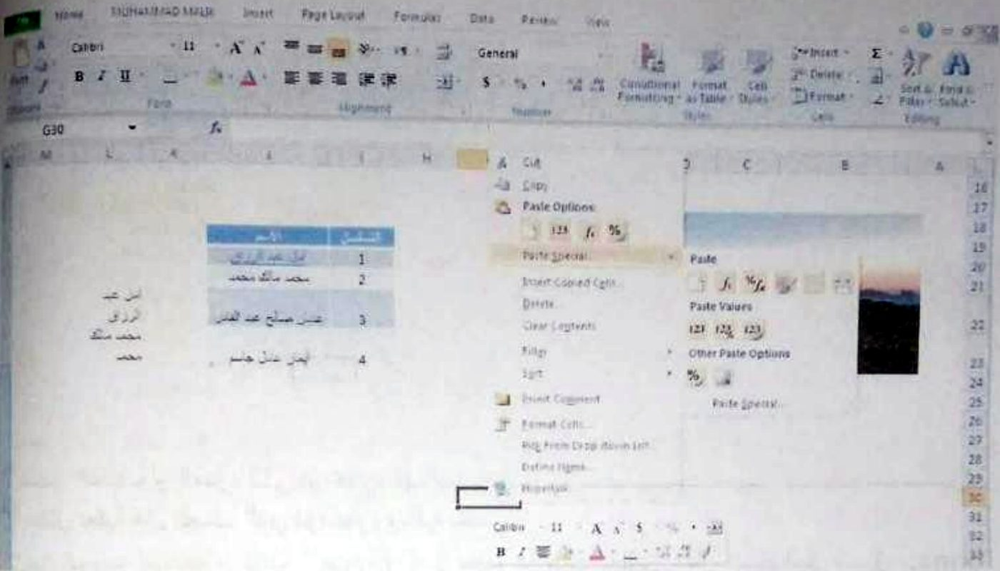
التعبئة التلقائية AUTO FILL
تستخدم التعبئة التلقائية لنسخ البيانات أو القيم الحسابية أو الأرقام أو التواريخ الى عدة خلايا متتالية في ورقة العمل كما يأتي :
نذهب الى تبويب الصفحة الرئيسية Home ومن مجموعة تحرير Editing ننقر Fill وفيها ننقر أما الى الأعلى UP أو الى الأسفل Down أو الى اليمين Right أو الى اليسار Left حسب أتجاه التعبئة المطلوب .
كما يمكن أستخدام مقبض التعبئة Fill Handle لأحدى الخلايا لنسخ محتوياتها الى الخلايا المجاورة عندما يتغير شكل المؤشر الى + عند النقر على الخلية والأستمرار بالنقر والسحب الى الخلايا التي نريد النسخ اليها .
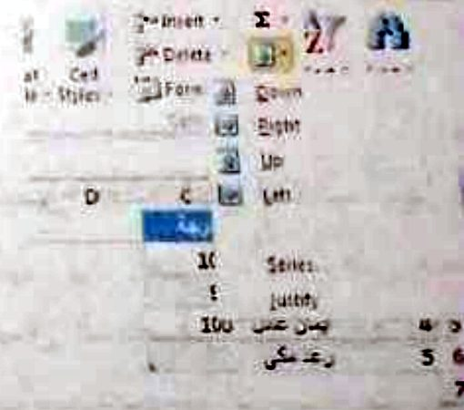
احيانا تحتاج تعبئة لتغلايا بسلسلة متخصصة كان تكون أيام الأسبوع مثلا أو شهور السنة الميلادية أو شهور السنة الهجرية ولأجراء ذلك نتبع مايأتي :
في الخلية الأولى نكتب القيمة الأولى السلسلة وفي الخلية الثانية تكتب القيمة الثانية السلسلة لتشكيل نمط محدد ثم نسحب مقبض التعبئة إلى الخلايا التي نريدها وعند وصولنا الى الخلية الأخيرة تحرر زر الفارة كما في الشكل .
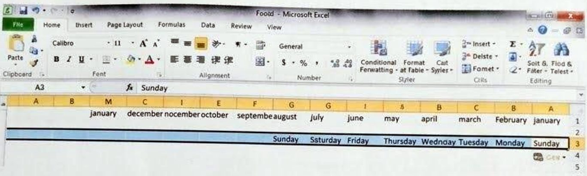
أحيانا تحتاج قائمة مخصصة لأستخدامها بشكل مستمر ولمرات عديدة كان نحتاج لأيام الأسبوع باللغة العربية أو اللغة الأنكليزية أو شهور السنة أو غير ذلك ولأنشاء ذلك تقوم بما يأتي :
- 1. ننقر قائمة File وفيها ننقر خيارات Options .
- 2. ننقر Advanced وفي مجموعة General تنقر Edit Custom Lists فتظهر نافذة قوائم مخصصة Custom Lists .
- 3. نكتب القائمة في مربع أدخالات القائمة List Entries ثم نضغط Enter .
- 4. نضغط أضافة Add لأضافة هذه السلسلة الي مربع قوائم مخصصة Custom Lists ثم ننقر Ok كما في الشكل .
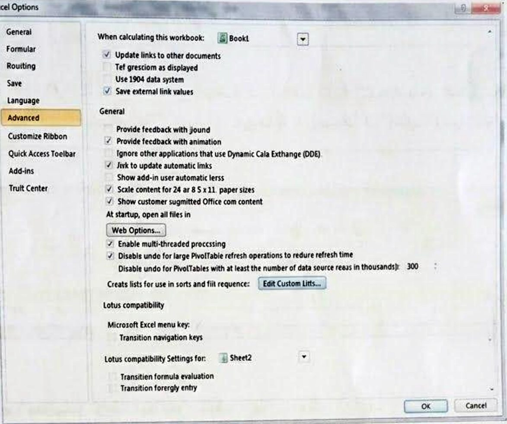
البحث والأستبدال FIND AND REPLACE
البحث عن رقم أو كلمة معينة أو نص أو معادلة في ورقة العمل نتبع مايأتي :
1. ننتقل الى تبويب الصفحة الرئيسية Home ومن مجموعة تحرير Editing ننقر بحث وتحديد Find &Select كما في الشكل .
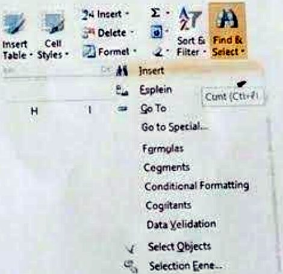
2. من هذه القائمة ننقر بحث Find فتظهر نافذة بحث وأستبدال Find and Replace كما في الشكل.
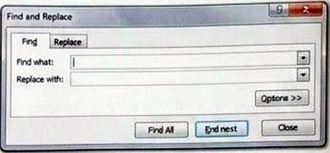
3. في مربع البحث عن Find What نكتب الكلمة التي تريد البحث عنها ثم ننقر البحث عن التالي Find Next ونستمر في البحث عن الكلمة في بيقة المواضع .
4. أما عندما ننقر تبويب أستبدال Replace فيظهر مربع استبدال ب Replace With فنكتب القيمة الجديدة ثم ننقر استبدال أذا أردنا أستبدال الكلمات واحدة تلو الأخرى ، أما أذا أردنا أستبدال الكلمة أينما وجدت فننقر أستبدال الكل Replace All كما في الشكل.
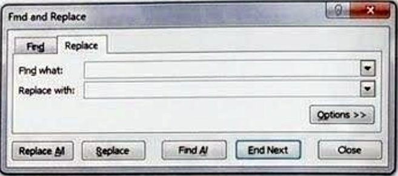
الانتقال الى خلية ما Go To
أذا أردنا الأنتقال الى خلية ما في ورقة العمل نتبع مايأتي :
1. ننتقل الى تبويب الصفحة الرئيسية Home ومن مجموعة تحرير Editing ننقر بحث وتحديد Find& Select ثم ننقر الأنتقال الى Go To فتظهر نافذة الانتقال الى Go To كما في الشكل.
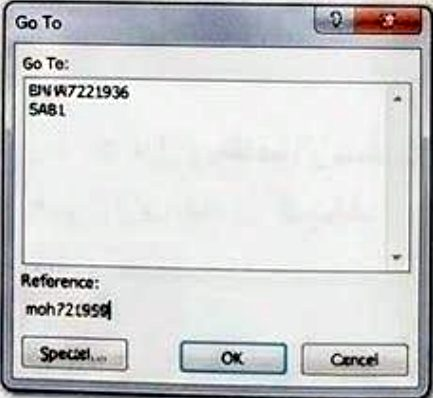
2. نكتب مرجع الخلية في مربع المرجع Reference كان تكون الخلية moh721959 مثلا فعند الضغط على OK يتحرك المؤشر الى الخلية moh721959 .
أوراق العملManaging Worksheets
أدراج ورقة عمل جديدة INSERTING A NEW WORKSHEET
يتكون مصنف Excel من ثلاث أوراق عمل Worksheets بشكل أفتراضي تظهر بشكل تبويبات في اسفل المصنف ،لأدراج المزيد من أوراق العمل الى المصنف ننقر تبويب أدراج ورقة عمل Insert Worksheet أسفل المصنف كما في الشكل .
حذف ورقة العمل DELETING WORKSHEET
لحذف ورقة عمل من مصنف Excel نحدد الورقة المطلوب حذفها ثم نذهب الى تبويب Home ومنه الى مجموعة الخلايا Cells ننقر السهم أسفل Delete ثم ننقر حذف ورقة Delete Sheet كما في الشكل .
تظهر نافذة تأكيد يجب النقر عليها بنعم OK لتأكيد عملية الحذف .
تغيير أسم ورقة عمل RENAMING WORKSHEET
لتغيير الأسماء التلقائية Sheet 1,Sheet2,Sheet3 لأوراق العمل في Excel بأسماء جديدة ننقر نقرا مزدوجا فوق أسم الورقة المراد تغيير أسمها مثلا Sheet 3 فيتظلل أسم ورقة العمل لندخل الأسم الجديد بدلا عنه كما في الشكل .
ثم نضغط مفتاح الأدخال Enter .
أخفاء ورقة عمل HIDING WORKSHEET
الأخفاء ورقة العمل وأظهارها عند الحاجة تنقر بزر الفارة الأيمن على ورقة العمل التي تريد أخفاءها ومن القائمة الفرعية تنقر أخفاء Hide فتختفى ورقة العمل من المصلف كما في الشكل.
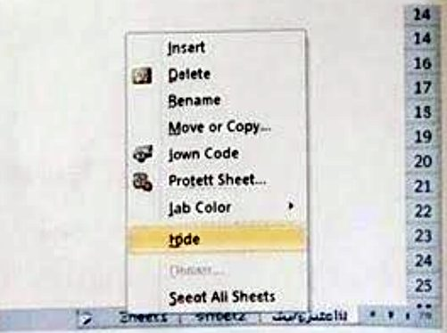
لأظهار ورقة العمل التي تم أخفاءها تنقر زر الفارة الأيمن في منطقة التسمية ومن القائمة الفرعية ننقر أظهار Unhide فيظهر مربع حرار أظهار كما في الشكل .
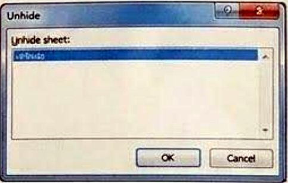
ننقر أسم ورقة العمل التي تم أخفاءها وتريد أظهارها في نافذة أظهار ورقة Unhide Sheet ثم تنقر OK فتظهر ورقة العمل مرة أخرى .
نسخ أو نقل ورقة العمل COPYING OR MOVING WORKSHEET
ننقل ورقة العمل ضمن المصنف نسحب ورقة العمل المطلوب نقلها وبأستمرار السحب يتغير شكل مؤشر الفارة الي ورقة ويظهر سهم صغير يحدد الموقع الذي تحركت اليه الورقة فنحرر زر الفارة هناك كما في الشكل.
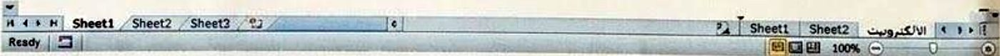
أما عندما تربد نسخ الورقة ني نفس المصنف تنقر ورقة العمل التي تريد نسخها مع الضغط على مفتاح Ctrl ونسحب الى الموقع الجديد ثم تحرر زر الفارة وبعد ذلك نترك مفتاح Ctrl ويمكن تغيير أسم الورقة المنسوخة بعد ذلك كما في الشكل.
تلوين أسماء أوراق العمل CHANGING THE COLOR OF WORKSHEETS NAMES
يمكن تلوين أسماء أوراق العمل تتسهيل عملية الأنتقال اليها والتعامل معها وذلك بنقر أسم ورقة العمل بالزر الأيمن القارة ثم تنقر لون علامة الجدولة Tab Color فتظهر قائمة بمجموعة من الألوان حيث يمكن أختيار اللون المطلوب كما في الشكل.
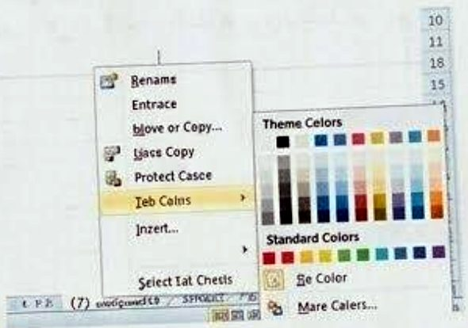
الصيغ والدوالFormulas and Functions
الصيغ والدوال FUNCTIONS AND FORMULAS
الصيغة الرياضية قد تحتوي أرقام قد عمليات حسابية تستخدم في تحليل البيانات في Excel الجدول الأتي يمثل أهم الصيغ الرياضية المستخدمة في انجاز العمليات الحسابية:
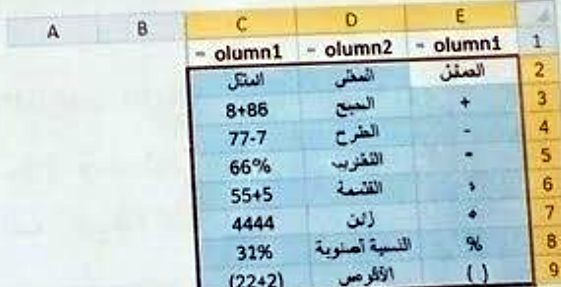
عند أستخدام الصيغ الرياضية يجب أن لاتنسي الترتيب فيما بينها حيث أن عملية الضرب تم قبل الجمع والصيغة الرياضية الموجودة داخل القوس يتم أجراءها قبل العملية التي خارج القوس وهكذا . يجب أن لاتنسي أن الصيغة الرياضية تبدأ دوما بعلامة المساواة .
دالة الجمع SUM FORMULA
1. نضع الموشر في الخلية التي تريد أظهار نتيجة الجمع فيها وفي مثالنا هذا هي الخلية G4 ونضع فيها علامة المساراة =.
2. نوجه مؤشر الفارة الى الخلية B4 وننقر فيها فنلاحظ ظهور مرجع الخلية في شريط الصيغة وتظهر حدود حول الخلية المحددة .
3. نضع علامة الجمع + ونوجه مؤشر الفارة الي الخلية C4 وننقر فيها فنلاحظ ظهور مرجع الخلية في شريط الصيغة وتظهر حدود حول الخلية المحددة .
4. نستمر بهذه العملية الي أن ندخل جميع القيم الموجودة والمطلوب جمعها ثم تضغط Enter فتظهر نتيجة المعادلة في موقعها في الجدول .
يمكن أستخدام دالة الجمع التلقائي ( Σ ) AutoSum لأجراء عملية الجمع حيث ننقر الخلية المطلوب وضع نتيجة الجمع فيها ثم ننقر تبويب Home ومنه ننقر أيقونة الجمع التلقائي في مجموعة تحرير Editing أومن تبويب Formula ننقر أيقونة الجمع التلقائي ثم ننقر Enter فتظهر نتيجة الجمع
تعديل المعادلة EDITING A FORMULA
يمكن تعديل المعادلة أما من شريط المعادلة أو من الخلية التي تحتوي على المعادلة حيث ننقر في هذه الخلية فتظهر المعادلة على شريط المعادلة فنقوم بأجراء التعديلات المطلوبة وعند الأنتهاء من ذلك نضغط مفتاح الأدخال Enter أو ننقر الخلية نقرا مزدوجا فتظهر المعادلة فيها .
دالة المعدل AVERAGE FORMULA
في الجدول ادناه المطلوب حساب معدل درجات كل طالب
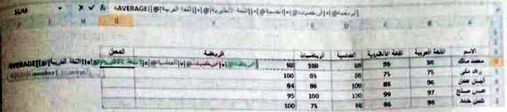
نضع الموشر في الخلية المراد أيجاد المعدل الحسابي فيها ونكتب علامة المساواة ثم نكتب Average ونفتح قوس وندخل قيم الخلايا المتجاورة بالنقر والسحب عليها بواسطة الفارة ونغلق القوس ونضغط مفتاح Enter فنحصل على قيمة المعدل .
أذا كانت الخلايا غير متجاورة ندخل قيمة الخلية الأولى ونضع فاصلة (,) وندخل قيمة الخلية الثانية وهكذا حتى يتم أدخال جميع قيم الخلايا غير المتجاورة ونضغط Enter للحصول على معدل التاتج المطلوب .
يمكن أيجاد قيمة المعدل لصف من الأرقام في الجدول تنقر الخلية المطلوب أيجاد المعدل فيها وننتقل الى تبويب الصفحة الرئيسية Home وفي المجموعة تحرير Editing تنقر السهم الموجود الى جانب الجمع التلقائي Auto sum وتختار معدل Average فيظهر خط منقط حول الخلايا المطلوب أيجاد معدلها وفي نفس الوقت تظهر صيغة الدالة في شريط الصيغة المستخدمة .
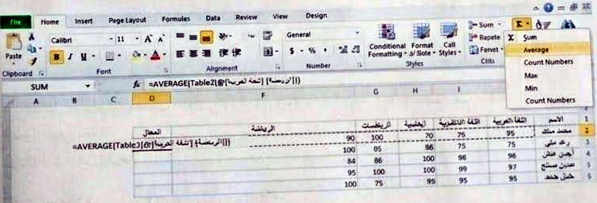
لأستنساخ صيغة المعدل مثلا الى بقية صفوف الخلايا نحدد خلية المعدل الأولى ونحرك مؤشر الفارة داخل الخلية حتى يتغير شكله الى + في الزاوية السفلى اليسرى من الخلية فنضغط زر الفارة بشكل مستمر ونسحب الى الخلية الأخيرة في الجدول فتظهر جميع المعدلات المطلوبة في الجدول بأستنساخ الصيغة الى بقية الخلايا .
المرجع النسبي RELATIVE REFERENCE
عند ظهور العلامة + في الزاوية السفلى اليسرى من الخلية بشكل مستمر ونسحب يزداد مزجع كل خلية بمقدار 1 في كل مرة ويقوم برنامج Excel بضبط عناوين الخلايا تلقائيا وهذا يسمي بالمرجع النسبي Relative Reference وفي الجدول أعلاه الخلية G4 معادلتها Average(B4:F4) والخلية G5 معادلتها Average (B5:F5) وهكذا .
المرجع المطلق ABSOLUTE REFERENCE
عندما نريد أن نثبت مرجع الخلية المنسوخة كي بطور في جميع الخلايا المنسوخ اليها علينا إستخدام المرجع المطلق Absolute reference فأذا أردنا تثبيت العمود فقط نضع علامة الدولار قبل حرف العمود وأذا أردنا تثبيت الصف نضع علامة دولار قبل رقم الصف، وأذا أردنا تثبيت الصف والعمود نضع علامة الدولار قبل كليهما كما في الشكل.
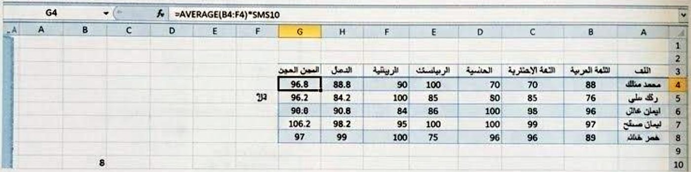
نلاحظ في الشكل أعلاه أنه تم أضافة العدد 8 الواقع في الخلية M10 الى جميع في المعدل في الجدول عن طريق استخدام المرجع المطلق الظاهر في شريط الصيغة.
دالة القيمة القصوى MAX ودالة القيمة الدنيا MIN — MAXIMUM AND MINIMUM FORMULA
لأيجاد القيمة القصوى لمجموعة من في الخلايا المتجاورة تنقر أحدى الخلايا أسفل العمود الذي يحتوي على الأرقام أو أحدى الخلايا الواقعة يسار الصف الذي يحتوي على الأرقام ثم نذهب الي تبويب الصيغة Formula وتنقر السهم الموجود الى جانب الجمع التلقائي Auto sum ومن القائمة المنسدلة تختار القيمة القصوى MAX ثم نضغط Enter للحصول على القيمة القصوى في الخلية المحددة كما في الشكل.
بنفس الطريقة يمكن ايجاد بقبة القيم الموجودة في القائمة المنسدلة مثل Sum وAverage و Count numbers و MIN . أما عندما تختار النفرة الأخيرة More functions فتظهر لنا القائمة الظاهرة كما في الشكل واالي تحتوي على جميع العلاقات الموجودة في Excel الرياضية والمنطقية والأحصائية وغيرها.
في هذه القائمة في مربع البحث عن دالة Search for a function ندخل وصفا عن الدالة المطلوب البحث عنها وعند ذلك تظهر الدالة فى مربع تحديد الدوال Select a function وعند النقر على OK تظهر نافذة وسابط الدالة Function arguments فننقر زر الطي Collapse Button العودة الى ورقة الممل وتحديد الخلايا المطلوب أستخدامها وبعد الأنتهاء من ذلك تنقر OK .
الدوال المنطقية NOT, OR, AND (LOGICAL FUNCTIONS)
دالة AND
تستخدم دالة AND للمقارنة بين قيمتين منطقيتين فإذا كانت كلا القيمتين صحيحة تكون النتيجة صحيحة، وفيما عدا ذلك تكون النتيجة خاطئة استنادا الى جدول الحقيقة المنطقي الآتي.
مثال على ذلك:
المطلوب تحديد الطلبة الذين درجتهم في مادة الحاسبة أكبر من 90 وفي مادة الرياضيات أكبر من 85 .
دالة OR
تستخدم دالة OR للمقارنة بين قيمتين منطقيتين فإذا كانت كلا القيمتين خاطئة تكون النتيجة خاطئة وفيما عدا ذلك تكون النتيجة صحيحة استنادا الى جدول الحقيقة المنطقي الآتي.
مثال على ذلك:
المطلوب تحديد الطلبة الذين درجتهم في مادة الحاسبة أكبر من 80 أو في مادة الرياضيات أكبر أو تساوي 90 .
دالة NOT
تستخدم دالة NOT لقلب النتيجة للعلاقة المنطقية فاذا كانت القيمة المنطقية في الدخول صحيحة مثلا فإنها تكون خاطئة في الخروج والعكس صحيح أستنادا الى جدول الحقيقة المنطقي الأتي :
مثال على ذلك.
المطلوب تحديد الطلبة الذين درجتهم أقل من 90 في مادة الحاسبة.
التنسيق والصور والأشكالFormatting, Pictures and Shapes
تنسيق النص FORMATTING A TEXT
يمكن تنسيق النص الموجود في ورقة العمل من حيث لون الخط ونمطه ولونه كما يأتي :
1. يجب تحديد الخلايا المطلوب أجراء التنسيقات عليها حتى وأن كانت خالية من البيانات .
2. نذهب الي تبويب الصفحة الرئيسية Home ومنه الى مجموعة الخط Font وتنقر السهم الموجود في الزاوية اليمنى السفلى من المجموعة فتظهر قائمة بأنواع الخطوط المتوفرة حيث يمكن أختيار الخط الذي تريد كما في الشكل حيث يوفر Excel مجموعة كبيرة من الخطوط في اللغتين العربية والأنكليزية .
3. يمكن التحكم بحجم الخط عن طريق تظليل النص والنقر على مربع حجم النص فتظهر قائمة بججوم النص يمكن أختيار الحجم المطلوب منها .
4. يمكن تظليل الحجم الموجود في هذه الأيقونة وكتابة الحجم المطلوب فيها مباشرة .
5. يمكن استخدام أيقونة تكبير الخط Grow font وأيقونة تصغير الخط Shrink font ضمن مجموعة الخط .
6. يمكن استخدام بقية الأيقونات الموجودة في مجموعة الخط مثل أيقونة الخط التي يمكن من خلالها تحديد نوع الخط المطلوب .
7. يمكن أستخدام أيقونة لون الخط Font color لتغيير لون الخط وأيقونة لون خلفية الورقة Fill color لتغيير لون خلفية الخلية أو الخلايا المحددة .
8. يمكن استخدام مجموعة الأيقونات B I U حيث أن B مختصر لكلمة Bold التي تعني واسع أو عريض و U مختصر لكلمة Italic التي تعني ماتل و B مختصر لكلمة Underline التي تعني وضع خط من الأسفل .
9. يمكن أستخدام الأيقونة لوضع تشكيلة من الأطارات حول الخلايا المحددة حيث تظهر قائمة منسدلة يمكن منها أختيار الأطار المطلوب .
لأزالة الحدود من الخلايا تنقر السهم الموجود الى جانب أيقونة الحدود ومن القائمة المنسدلة نختار بلا حدود No Border .
محاذاة البيانات في الخلايا DATA ALIGNMENT IN THE CELLS
يمكن تغيير محاذاة النصوص والأرقام والتواريخ في وركة العمل كما يأتي :
نظلل الخلايا التي تريد تعيير محاذاة البيانات الموجودة فيها ونذهب الى الصفحة الرئيسية ومن مجموعة محاذاة تقوم بما يأتي :
- 1. ننقر محاذاة الى الأعلى Top Align نرفع مستوى النص الى الأعلى .أو محاذاة الى الوسط Middle align لتوسيط مستوى النص في الخلية , أو محاذاة الى الأسفل لخفض مستوى النص الى الأسفل .
- 2. ننقر محاذاة الى اليمين Align Text Right أو محاذاة الى اليسار Align Text Left أو توسيط Center .
لتدوير محتويات خلايا النص تنقر فوق الأتجاه Orientation ونحدد الخيار المطلوب الأستمارة من القائمة المنسدلة كما في الشكل .
4.لأظهار النص داخل الخلية على أكثر من سطر ننقر ألتفاف النص Text Wrap .
5. إذا كانت لدينا مجموعة خلايا متجاورة وتحتاج دمجها وتوسيط النص فيها ننقر دمج وتوسيط .
يمكن تطبيق أحد الخيارات المتاحة من القائمة المنسدلة حسب طبيعة النص .
أخفاء وأظهار الصفوف والأعمدة HIDING AND UNHIDING ROWS AND COLUMNS
يمكن أخفاء صف محدد في جدول وذلك بتحديد رقم الصب ثم نذهب الى التبويب Home ومنه الى مجموعة الخلايا Cells ومنها نختار تنسيق Format ومن القائمة المنسدلة نختار أخفاء وعدم أخفاء Hide& Unhide ومن القائمة الفرعية تختار أخفاء صفوف Hide Rows كما في الشكل .
ولأعادة الصف الذي تم أخفاءه تؤشر بالفارة على موقع رقم الصف حتى يتحول مؤشر الفارة الى سهم براسين ونسحب الصفوف لحين ظهور الصف من جديد أو من القائمة المنسدلة الأنفة الذكر يمكن النقر على Unhide Rows فيظهر الصف من جديد .
يمكن أجراء نفس خطوات العمل المذكورة أعلاه لأخفاء عمود أو ورقة عمل وأظهارها .
إدراج صورة INSERTING PICTURE
يمكن إدراج صورة من ملف وملك من طريق الذهاب الى تبويب أدراج Insert ومنه الى مجموعة الرسوم التوضيحية Illustrations وفيها تنقر صورة Picture كما في الشكل.
تظهر نافذة Insert Picture حيث نستطيع من خلالها إدراج صورة من أي موقع من مواقع الخزن في الحاسبة .
ضبط الصورة PICTURE ADJUSTMENTS
يمكن إجراء بعض عمليات الضبط على الصورة بعد أدراجها في ورقة العمل وذلك بالذهاب الى تبويب أدوات الصورة Picture Tools . تنسيق Format ومنها الى مجموعة الضبط Adjust .
في مجموعة الضبط Adjust نلاحظ الإيعازات الأتية:
- 1. Remove background أزالة الخلفية حيث يمكن من خلالها أجراء تعيير على خلفية الصورة.
- 2. Corrections التعديلات حيث يمكن من خلالها أجراء مجموعة من التعديلات على الصورة.
- 3. Color اللون حيث يمكن من خلالها أجراء مجموعة من التعديلات على لون الصورة.
- 4. Artistic effects التقيرات الفنية حيث يمكن من خلالها أجراء تأثيرات فنية على الصورة.
- 5. Compress picture ضغط الصورة حيث يمكن من خلالها ضغط الصورة لتقليل حجمها لغرض نقلها من حاسبة الى أخرى أو عن طريق شبكة الأنترنيت.
- 6. Change picture تغيير يمكن من خلالها تغيير الصورة الصورة الموجودة بصورة أخرى من الغير .
- 7. اعادة تعيين صورة حيث يمكن من خلالها العودة بالصورة إلى حالتها الأولى . Reset picture .
أنماط الصورة PICTURE STYLES
- 1. يمكن تغيير نمط الصورة وذلك بالذهاب إلى أنماط الصورة الظاهرة في الشكل المذكور في الفقرة السابقة حيث يمكن اختيار النمط المطلوب من الأنماط الموجودة ويمكن تغيير حدود النمط الذي تم اختياره من المربعات الظاهرة على حدود النمط .
- 2. يمكن تغيير إطار الصورة من خلال نقر أطار الصورة Picture border واختيار الشكل المطلوب للاطار من القائمة المنسدلة .
- 3. يمكن تغيير التأثيرات المطبقة على الصورة مثل الظلال والأنعكاس والأتجاه الثلاثي الأبعاد وغير ذلك من التأثيرات من خلال نقر تأثيرات الصورة Picture Effect .
- 4. يمكن أدخال الصورة ضمن المخططات الهيكلية وذلك من خلال ال Picture layout .
أدراج الأشكال INSERTING SHAPES
يمكن أدراج أشكال مختلفة من مجموعة الرسوم التوضيحية Illustrations ومن مجموعة الأشكال Shapes ننقر السهم الموجود فيها ومن القائمة المنسدلة نختار الشكل المطلوب .
بعد اختيار الشكل المطلوب يمكن تغيير نمطه من مجموعة الأدوات Drawing Tools و تنسيق Format والوصول إلى النمط المطلوب .
المخططات الهيكلية SMART ART
من مجموعة Smart Art يمكن أختيار الشكل المطلوب حسب عناوين المجاميع الموجودة لعمل مخطط هيكلي لتوضيح بنية شركة أو مؤسسة رسمية .
بعد اختيار الشكل المطلوب يمكن تغيير نمطه من مجموعة الأدوات Tools وتصميم Design والوصول الى النمط المطلوب .
فعندما ننشيء مخططا هيكليا يمكن أختيار نمط المخطط المطلوب وأجراء التنسيقات اللازمة من حيث تعديل محتوى المخطط أو نوعه أو ألوانه كما في الشكل .
أدراج مقطع SCREENSHOT
يمكن أدراج مقطع من صورة أو مخطط أو نص من مستند أو ورقة عمل وأدراجه ضمن المستند المفتوح وذلك بالذهاب الى أدراج Insert ومن مجموعة الرسوم التوضيحية Illustrations ننقر Screenshot حيث ينتقل المؤشر الى المستند أو ورقة العمل التي تحتوي على المقطع المطلوب وفيها نحدد المقطع وعند أنتهاء التحديد يتم نقل هذا المقطع الى المستند المطلوب نقل المقطع أليه أوتوماتيكيا كما في الشكل .
تخطيط الصفحة والحمايةPage Layout and Protection
السمات THEMES
أن السمات في مجموعة الخصائص التي تطبق على المصنف بما يحتويه من تصميم ومخططات والوال وتغييرها حسب الرغبة ويمكن الوصول اليها وتطبيقها على المصنف بالذهاب الى تخطيط الصفحة Page Layout ومنها إلى السمات Themes نفتح قائمة السمات المنسدلة ومنها تختار السمة المطلوبة كما في الشكل.
أعداد الصفحة PAGE SETUP
بالنقر على تبويب تخطيط الصفحة Page Layout والذهاب الى أعداد الصفحة Page Setup نلاحظ فيها مجموعة من الخيارات التي تخص إعدادات الصفحة كما في الشكل.
الخيارات المتاحة
- 1. الهوامش Margins حيث يمكن تغيير هوامش الصفحة .
- 2. الأتجاه Orientation حيث يمكن جعل الصفحة بالأتجاه العمودي Portrait أو بالأتجاه الأفقي Landscape .
- 3. الحجم Size حيث يمكن تحديد حجم الورقة من هذا التبويب .
- 4. منطقة الطباعة Print Area حيث يمكن من هنا تحديد خلية أو مجموعة خلايا أو منطقة معينة من الورقة لطباعتها .
- 5. الفواصل Breaks حيث يمكن من خلالها وضع فواصل محددة في الصفحة أو إزالتها .
- 6. الخلفية Background حيث يمكن تغيير شكل خلفية الصفحة ووضع صورة أو مخطط محدد على خلفية الصفحة .
- 7. طباعة العناوين Print Titles حيث يمكن من خلالها فتح نافذة إعدادات الصفحة المعروفة في الإصدارات السابقة لـ Excel والتعامل معها كما في الشكل.
التنسيقات الشرطية CONDITIONAL FORMATTING
التنسيق الشرطي يستفاد منه في التمييز بين بعض القيم في الجداول كما مبين في الجدول الأتي :
في حذا الحدول المطلوب مثلا وضع تنسيق شرطي لتمييز قيم الرواتب التي تتراوح بين 52000 و 55000 ولتحقيق ذلك نحدد القيم المطلوب وضع تنسيق شرطي لها ثم نذهب الى تبويب Home ومله الى التنسيق الشرطي Conditional Formatting حيث تظهر قائمة منسدلة منها يمكن أختيار نوع التنسيق المطلوب كما في الشكل.
عند تطبيق التنسيق اعلاه يصبجح الجدول كالأتي:
حماية الأوراق PROTECT SHEETS
يمكن وضع حمايةعلى ورقة بحيث نمنع الأخرين من العبث بالمعلومات المهمة الموجودة فيها بالذهاب الي المراجعة Review ومنه الي مجموعة التغييرات Changes ننقر حماية الورقة Protect Sheet فتظهر النافذة الأتية كما في الشكل.
فعند تحديد هذا الجدول مثلاً:
وأدخال كلمة مرور سرية لحماية المعلومات في الجدول نضغط OK تظهر نافذة ثانية لتأكيد كلمة المرور المذكورة وبعدها نضغط OK.
بعد ذلك عندما نحاول تغيير أي من مفردات البيانات في الجدول لانتمكن من ذلك وتظهر لنا الرسالة الاعتراضية الآتية:
التحقق من صحة البيانات DATA VALIDATION
أن التحقق من صحة البيانات بعنى تحديد شروط معينة لأدخال البيانات ويتم ذلك كالآتي :
تتقرض أن قيم الرواتب المدخلة في الجدول الأتي يجب أن لاتقل عن 50000ولاتزيد عن 75000 والتحقق ذلك تحدد الخلايا المطلوب التحقق من بياناتها في الجدول:
نذهب الي تبويب البيانات Data ومنه الي أدوات البيانات Data Tools ننقر التحقق من صحة البيانات Data Validation فتخهر لنا الناقذة الخاصة بالتحقق من صحة البيانات كما في الشكل .
حيث من تبويب Settings تختار توعية الترقيم Whole Number ونحدد القية العطمي Maximum والقيمة الدنيا Minimum الراتب في الجدول .ثم ننتقل إلى تبويب رسالة الأدخال Input message ونكتب في الشريئة الأول عنوان لرسالة التخذير وفي الشريط الثاني تكتب عبارة توضيحية القيم الممكن أدخالها في الجدول ,وفي تبويب تحذير الخطأ Error Alert تكتب عبارة تظهر عندما ندذل قيمة خاطئة .
الرأس والتذييل HEADER AND FOOTER
يمكن أنشاء رأس وتذييل لصفحات المستند في برنامج Excel وذلك بالذهاب الى تبويب أدراج Insert ومنه الى مجموعة النص Text وفيها ننقر الرأس والتذييل Header& Footer فيظهر لنا تبويب أدوات الرأس والتذييل Header& Footer Tools حيث نلاحظ أنها مقسمة الى أربعة مجاميع كما في الشكل.
- 1. مجموعة الرأس والتذييل Header& Footer حيث تظهر لكل من الرأس والتذييل قائمة منسدلة بارقام الصفحات والأوراق والملاحقات الممكن أدراجها في الرأس والتذييل .
- 2. مجموعة عناصر الرأس والتذييل Header& Footer Elements حيث يمكن أدراج رقم الورقة أو الرقم الذي يمثل عدد أوراق المصنف أو أدراج التاريخ أو الوقت أو أي عنصر من العناصر الظاهرة .
- 3. مجموعة الأنتقال Navigation حيث يمكن منها الأنتقال من الرأس الى التذييل وبالعكس .
- 4. الخيارات Options حيث يمكن منها جعل الصفحة الأولي منمن ترقيم المستند أو خارج الترقيم وكذلك يمكن جعل ترقيم الصفحات الفرفية يختلف عن ترقيم الصفحات الزوجية .
يمكن الذهاب الى رأس وتذييل الصفحة عن طريق تبويب تخطيط الصفحة Page layout ومنه الى أعداد الصفحة Page setup وعند النقر على السهم الموجود في الزاوية اليمني السفلى تفتح نافذة أعداد الصفحة المعروفة في الأصدارات السابقة ل Excel كما في الشكل .
في هذه النافذة عندما نفتح تبويب الرأس والتذييل يمكن الوصول إلى نافذة الرأس المخصص Custom Header أو نافذة التذييل المخصص Custom Footer كما في الشكل.
حيث يمكن أجراء التنسيقات اللازمة للرأس والتذييل عن طريقهما .
مكتبة الدوال والربط الفائقFunction Library and Hyperlinks
مكتبة الدوال Function Library
بالذهاب إلي تيويب العلاقات Formulas نجدعا أقسمة إلي ربعة مجموعات :
المجموعة الأولي هي مكتبة الأولى Function Library حيت للاحظ في يسارقا الرمز أدراج دالة الذي عند النقر علية تنتج نافذة أدراج الدوال كما في الشعير .
من هذه النافذة يمكن اختيار منة الدوال Category المطلوب استطلوب كما في هذا المثال تم أختيار الدول المنطقة (AND,OR,NOT,TURE,FALSE) Logical) الخ .
كما يحتوي هذا التيويب مجاميع الدوال الأتي:
- 1. مجموعة AutoSum التي تحتوي الدوال (,Sum, Max, Min ) الخ .
- 2. مجموعة Recently Used التي تحتوي الدوال التي أسختمت مزخراً .
- 3. مجموعة Financial التي تحتوي الدوال المالية .
- 4. مجموعة Logical التي تحتوي الدوال المنطقية .
- 5. مجموعة Text التي تحتوي الدوال الخاصة بالنصوص .
- 6. مجموعة Date&Time التي تحتوي الدوال الخاصة بالتاريخ والزمن .
- 7. مجموعة Lookup&Reference التي تحتوي الدوال الخاصة بموقع ومرجع الخلية .
- 8. مجموعة Math & Trig التي تحتوي الدوال الخاصة بالرياصيات والمثلات .
- 9. مجموعة More Function التي تتكون من كمس جماميع فرعة :
الأولى Statistical التي تمثل الدوال الإحسائية .
الثانية Engineering التي تمثل الدوال الهندسة .
الثالثة Cube التي تمثل الدوال التكعيبية .
الرابعة Information التي تمثل الدوال المعلوماتية .
الخامسة Compatibility التي تمثل دوال التوافق .
الربط الفائق HYPERLINK
يمكن الاستفادة من خاصية الربط الفائق بالأنتقال من خلية الى أخرى ضمن نفس المستند أو الأنتقال من ورقة عمل الى أخرى أو الانتقال في مستند أخر أو برنامج أخر في أي مكان داخل الحاسبة .
نلاحظ في الجدول أدناه أنه عند أنشاء ربط فائق Hyperlink على الخلية B6 تظهر نافذة أدراج الربط الفائق Insert Hyperlink كما في الشكل.
نلاحظ في هذا الفافذة شريط Text to display الذي يبين الخلية الخاصة بالربط الفائق وفي يسار النافذة نلاحظ اللوح Link to الذي يحدد موقع الربط الفائق المزمع أنشاؤه أما في ملفات موجودة أو صفحة ويب Existing File or Web Page أو موقع في هذا المستند Place in this Documents أو انشاء مستند جديد Create New Document أو عنوان بريد الكتروني Email Address حيث تختار منها الموقع المطلوب ثم تحدد الموقع المطلوب الربط اليه ثم نضغط OK .
الأن عندما نضغط على الخلية 86 يتم الأنتقال إلى الصفحة التي تم أجزاء الربط الفائق اليها كما في الشكل .
تخصيص الشريط الرئيسي CUSTOMIZE THE RIBBON
من الأشياء الجديدة في Excel 2010 أجراء التخصيص على الشريط الرئيسي Ribbon الظاهر في أعلى النافذة حيث يمكن أضافة تبويبات جديدة الى هذا الشريط وتضمين التبويب الجديد مجموعات مخصصة تناسب الأعمال الشخصية للمستخدم حيث يمكن تجميع الأوامر في هذا الشريط حسب المزاج .
ويتم ذلك بالذهاب الى تبويب قائمة الملف File ومنه الى الخيارات Options حيث نختار منها تخصيص الشريط Customize ribbon أو بوساطة الزر الأيمن للفأرة على أي موقع في الشريط الرئيسي نختار تخصيص الشريط الرئيسي Customize the ribbon فتظهر نافذة التخصيص كما في الشكل .
في هذه النافذة بالضغط على تبويب جديد New Tab يمكن استحداث تبويب جديد و اعطائه أسما خاصا وبالضغط على مجموعة جدينة New Group يمكن انشاء مجاميع محددة داخل هذا التبويب وبعد استكمال هذه العمليات نضغط على OK فيظهر التبويب الجديد ضمن الشريط الرئيسي كما في الشكل .
المخططات وخطوط المؤشرCharts and Sparklines
المخططات CHARTS
المخططات في وسيلة الأظهار البيانات الخاصة بورقة العمل في رسوم بيانية ، حيث أن المخططات تعطي فكرة سريعة وواضحة من المعلومات المسطرة في ورقة العمل .
يمكن أنشاء المخططات على ورقة العمل ذاتها أو على ورقة عمل جديدة .
لنفترض لدينا البيانات الأتية الخاصة بأنتاج أحد المصانح المتخصصة باتتاج مكونات الأجهزة الألكترونية.
المطلوب انشاء مخطط Chart يوضح المعلومات الموجودة في الجدول والقيام بذلك نذهب الى تيويب ادراج Insert رفية اني مجموعة المخططات حيث يمكتنا اختيار نوع المخطط أستنادا الى المجموعات الفرعية الأتية كتما في الشكل.
- 1. مجموعة column التي تحتوي مجموعة من المخططات العمودية الشكل .
- 2. مجموعة Line التي تحتوي مجموعة من المخططات الخطية .
- 3. مجموعة Pie التي تحتوي مجموعة من المخططات الدائرية .
- 4. مجموعة Bar التي تحتوي مجموعة من المخططات الأفقية .
- 5. مجموعة Area التي تحتوي مجموعة من المخططات التي تغطي المساحة .
- 6. مجموهة Scatter التي تحتوي مجموعة من المخططات الأجعقية .
- 7. مجموهة Other Chart التي تحتوي مجموعة من المخططات الأضافية المنوعة.
عند الضغط على السهم الموجود في الزاوية اليعني اليسلي من مجموعة Charts تظهر نافذة أدراج المخططات كما في السمهم المنمن المحمال المراردة مواسةء Charts ممن يعاك مخططات الأضافية ،كل.
حيث يمكن من هذه النافذة اختيار نوع المخطط المطلوب .
نعود الأن إلى جدولنا السابق الخاص بمصنع مكونات الأجهزة الألكترونية حيث أنه يجب تحديد المنطقة المطلوب إنشاء مخطط بياني لها من الجدول أولاً ثم نذهب إلى تبويب الأدراج Insert ومنه نختار شكل المخطط المطلوب أنشاؤه كما في الشكل.
الآن عند الضغط على Enter يتم إنشاء المخطط الذي تم تحديد نوعه من القائمة المنسدلة كما في الشكل.
التبديل بين بيانات الصف والعمود SWITCHING BETWEEN ROW AND COLUMN DATA
يمكن التبديل بين بيانات الصف والعمود كما يأتي:
- 1. ننقر قوق المخطط فيظير تبويب أدوات المخطط .
- 2. بالذهاب الى تبويب التصميم Design ومنه إلى مجموعة البيانات Data ننقر التدبيل بين الصف والعمود Switch Row/Column فيتم التغيير المطلوب كما في الشكل.
أضافة عناوين المحاور الى المخطط ADDING AXIS TITLES TO THE CHART
يمكن أضافة عنوان لمحوري المخطط كما يأتي :
- 1. ننقر فوق المخطط لأظهار أدوات المخطط Chart tools .
- 2. بالذهاب الي تيويب تخطيط Layout رمنه الي مجموعة تسميات Labels ننقر عناوين كل المحاور Axis Titles كما في الشكل.
تغيير نوع المخطط CHANGING CHART TYPE
يمكن تغيير نوع المخطط كما يأتي :
ننقر على المخطط لتحديده فتظهر أدوات المخطط Chart Tools وبالذهاب الى تبويب تصميم Design ومنه الى مجموعة النوع Type ننقر تغيير نوع المخطط Change Chart Type فتظهر نافذة تغيير نوع المخطط Change Chart Type ومنها نختار نوع المخطط الجديد كما في الشكل.
تغيير موقع المخطط CHANGING CHART POSITION
يمكن تغيير موقع المخطط كما يأتي:
- 1. ننقر فوق المخطط لإظهار أدوات المخطط Chart tools .
- 2. بالذهاب الى تبويب التصميم Design ومنه الى مجموعة الموقع Location ننقر نقل المخطط Move Chart فتظهر نافذة نقل المخطط كما في الشكل.
في هذه النافذة أذا نقرنا ورقة جديدة New Sheet فأن المخطط سينقل الى ورقة جديدة وأذا نقرنا Object in فأن عملية النقل تتم ضمن نفس الصفحة Sheet 1 كما في المثال أو الى Sheet 2 أو Sheet 3 .
يمكن أجراء العديد من الأجراءآت الأخرى على المخطط بأستخدام التبويبات الثلاثة الموجودة في ادوات المخطط Chart tool .
خطوط المؤشر SPARKLINE'S
هي من المخططات البيانية الجديدة في Excel 2010 وهي عبارة عن مخطط صغير في خلية من ورقة العمل تستخدم لأظهار الأتجاهات في سلسلة من القيم مثل معدلات الربح والخسارة. يتم أدراجها كما يأتي:
لنفترض أن لدينا الجدول الآتي الذي يمثل مبيعات أحدى الشركات من أجهزة الحاسبات في فترة معينة
المطلوب رسم المخطط الذي يمثل خطوط المؤشر لبيان التغيير الحاصل في مبيعات الشركة خلال هذه الفترة .
نحدد الخلية المطلوب وضع المؤشر خلالها وفي هذه الحالة يفضل أختيار مجموعة من الخلايا على شكل صف وعن طريق الأيعاز دمج وتوسيط Merge & center نجعلها خلية واحدة لتسقيط المخطط فيها .
بالذهاب الى تبويب أدراج Insert ومنه الى مجموعة خطوط المؤشر Sparkline's نختار نوع المخطط أما خطي Line أو عمودي Column كما في الشكل .
حيث تظهر نافذة حوار أنشاء خطوط المؤشر فنحدد فيها المدى المطلوب للخلايا في الشريط الأول والموقع المطلوب للمخطط في الشريط الثاني وعندما نضغط على موافق OK يتم أدراج المخطط المطلوب كما في الشكل .
من تبويب أدوات خطوط المؤشر Sparkline's Tools ومن التصميم Design يمكن أجراء التنسيقات والتعديلات المطلوبة للمخطط .
بالذهاب الى تبويب أدراج Insert ومنه الى مجموعة خطوط المؤشر Sparkline's يمكن أدراج مخطط الربح والخسارة للشركة باستخدام الأيعاز ربح / خسارة Win/Loss حيث يتم أدراج المخطط المطلوب كما في الشكل .
كذلك من تبويب أدوات خطوط المؤشر Sparkline's Tools ومن التصميم Design يمكن أجراء التنسيقات والتعديلات المطلوبة للمخطط .
الصوت بعده ما جاهز.
52 سؤال من نص المحاضرة، ويّا «ليش صح» بعد كل جواب.
ابدأ الاختباراضغط أي مصطلح منقّط تسمع لفظه ومعناه.
PDF ثنائي اللغة: نص الأستاذ + الترجمة + الخلاصة + الأسئلة · 8.2 MB
تحميل الملف